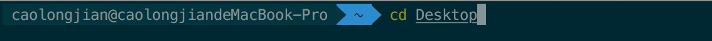

XtraFinder
https://www.trankynam.com/xtrafinder/
在早期的OS X上，只需打开XtraFinderInstaller即可安装XtraFinder。
从OS X 10.11开始，系统完整性保护会阻止代码注入（以及其他许多事情）。
XtraFinder的工作原理是将其代码注入Finder应用程序进程。
为了安装XtraFinder，您需要禁用系统完整性保护。
XtraFinder安装完成后，您可以重新启用系统完整性保护。
有关系统完整性保护的更多信息，请访问此页http://www.trankynam.com/xtrafinder/sip.html
1、第一次安装XtraFinder的步骤
1.禁用系统完整性保护。
2.打开XtraFinderInstaller安装XtraFinder。
3.重新启用系统完整性保护。
2、更新XtraFinder
您不需要重复安装过程。
只需将XtraFinder复制到/ Applications目录即可。
3、无需打开XtraFinderInstaller即可手动安装
1.将Extra目录中的XtraFinderInjector.osax复制到/System/Library/ScriptingAdditions
2.将XtraFinder复制到/Applications
4、禁用系统完整性保护的步骤
1.通过重新启动计算机并在启动时按住Command和R键启动到恢复操作系统。
2.从 Utilities 菜单启动 Terminal。
3.输入以下命令：csrutil disable
4.重新启动电脑。
5、将系统完整性保护恢复到原始状态：
启动到恢复操作系统并输入以下命令：csrutil clear
XtraFinder 系统完整性保护(SIP)
1、关于OS X 10.11中的系统完整性保护
苹果的文章。
系统完整性保护阻止代码注入（以及其他许多事情）。
XtraFinder的工作原理是将其代码注入Finder应用程序进程。
2、如何让XtraFinder在OS X 10.11中工作
您需要部分禁用系统完整性保护。
我不鼓励您禁用系统完整性保护。它会让你的电脑不安全。
3、如何部分禁用系统完整性保护
参考这篇苹果的文章。
按着这些次序：
1. 通过重新启动计算机并在启动时按住Command+R键启动到恢复操作系统。
2. 从 Utilities 菜单启动 Terminal。
3. 输入以下命令：csrutil enable --without debug
4. 重新启动您的计算机。
4、“csrutil enable --without debug” 命令的作用是什么？
它允许代码注入。这意味着XtraFinder可以将其代码注入Finder应用程序进程。
5、如何将系统完整性保护恢复到原始状态
启动到恢复操作系统并输入以下命令：csrutil clear
Go2Shell and AppleScript
给Finder加上一个打开当前路径的终端的功能
有两种实现：
Go2Shell App 和 AppleScript扩展：
AppleScript 实现 Go2Shell 一样的可视化打开方式
一、 Go2Shell
1. 安装
1、Go2Shell官方安装 （推荐，因为AppStore下载的版本太低，无法打开iTerm2 -坑-）
http://zipzapmac.com/Go2Shell

至此就可以打开shell，不过仅仅是打开系统默认的终端shell
2. 进入 Preferences 的方式
open -a Go2Shell --args config

iTerm2 不能打开当前文件所在目录（）
3. 官网下载效果图(多了个 >_< 能直接打开配置)

二、配置 Automator 方法
1. 新建 Automator 服务
打开Automator，选择新建，选择服务
2. 设置 Automator 服务
1、 服务接受设为没有输入，位置设为Finder(访达)

2、 从左侧的资源库中找出 运行 AppleScript，拖到右侧，然后保存为Open iTerm Here

复制以下代码
代码意思是将当前最前面的Finder地址如果获取不到，则返回桌面地址然后通知iTerm的第一个窗口新建标签并跳到这个目录去
on run {input, parameters}
tell application "Finder"
set pathList to (quoted form of POSIX path of (folder of the front window as alias))
set command to "clear; cd " & pathList
end tell
tell application "System Events"
-- some versions might identify as "iTerm2" instead of "iTerm"
set isRunning to (exists (processes where name is "iTerm")) or (exists (processes where name is "iTerm2"))
end tell
tell application "iTerm"
activate
set hasNoWindows to ((count of windows) is 0)
if isRunning and hasNoWindows then
create window with default profile
end if
select first window
tell the first window
if isRunning and hasNoWindows is false then
create tab with default profile
end if
tell current session to write text command
end tell
end tell
end run
3、点击运行就能在 iTerm2 中打开当前目录

4、 设置快捷键
打开系统设置，再去键盘设置里改一下快捷键，然后就可以快速在Finder中通过iTerm打开当前目录了

三、扩展
Automator 创建应用
使用的 Automator AppleScript 时候就在想为什么使用创建的服务，好吧，换个思路创建个应用，尝试着以Go2Shell的方式按住command键拖到文件夹上，结果和Go2Shell实现的效果一样OK，对 Automator 的使用充满期望~~

iTerm2
强大的 Mac OS 终端利器，跟着教程走了一遍。
1. 安装 iTerm2
下载地址：https://www.iterm2.com/downloads.html
下载的是压缩文件，解压后是执行程序文件，你可以直接双击，或者直接将它拖到 Applications 目录下。
或者你可以直接使用 Homebrew 进行安装：
$ brew cask install iterm2
2. 配置 iTerm2 主题
iTerm2 最常用的主题是 Solarized Dark theme，下载地址：http://ethanschoonover.com/solarized
下载的是压缩文件，你先解压一下，然后打开 iTerm2，按Command + ,键，打开 Preferences 配置界面，然后 Profiles -> Colors -> Color Presets -> Import，选择刚才解压的solarized->iterm2-colors-solarized->Solarized Dark.itermcolors文件，导入成功，最后选择 Solarized Dark 主题，就可以了。

3. 配置 Oh My Zsh
Oh My Zsh 是对主题的进一步扩展，地址：https://github.com/robbyrussell/oh-my-zsh
一键安装：
$ sh -c "$(curl -fsSL https://raw.github.com/robbyrussell/oh-my-zsh/master/tools/install.sh)"
安装好之后，需要把 Zsh 设置为当前用户的默认 Shell（这样新建标签的时候才会使用 Zsh）：
$ chsh -s /bin/zsh
然后，我们编辑vim ~/.zshrc文件，将主题配置修改为ZSH_THEME="agnoster"。

agnoster是比较常用的 zsh 主题之一，你可以挑选你喜欢的主题，zsh 主题列表：https://github.com/robbyrussell/oh-my-zsh/wiki/themes
4. 配置 Meslo 字体
使用上面的主题，需要 Meslo 字体支持，要不然会出现乱码的情况，字体下载地址：Meslo LG M Regular for Powerline.ttf
下载好之后，直接在 Mac OS 中安装即可。
然后打开 iTerm2，按Command + ,键，打开 Preferences 配置界面，然后Profiles -> Text -> Font -> Chanage Font，选择 Meslo LG M Regular for Powerline 字体。

效果：

5. 声明高亮
特殊命令和错误命令，会有高亮显示。
使用 Homebrew 安装：
$ brew install zsh-syntax-highlighting
安装成功之后，编辑vim ~/.zshrc文件，在最后一行增加下面配置：
source /usr/local/share/zsh-syntax-highlighting/zsh-syntax-highlighting.zsh

特殊命令和错误命令，会有高亮显示效果：

6. 自动建议填充
这个功能是非常实用的，可以方便我们快速的敲命令。
配置步骤，先克隆zsh-autosuggestions项目，到指定目录：
$ git clone https://github.com/zsh-users/zsh-autosuggestions ~/.oh-my-zsh/custom/plugins/zsh-autosuggestions
然后编辑vim ~/.zshrc文件，找到plugins配置，增加zsh-autosuggestions插件。

注：上面声明高亮，如果配置不生效的话，在plugins配置，再增加zsh-syntax-highlighting插件试试。
有时候因为自动填充的颜色和背景颜色很相似，以至于自动填充没有效果，我们可以手动更改下自动填充的颜色配置
7. 左右键跳转
主要是按住option + → or ←键，在命令的开始和结尾跳转切换，原本是不生效的，需要手动开启下。
打开 iTerm2，按Command + ,键，打开 Preferences 配置界面，然后Profiles → Keys → Load Preset... → Natural Text Editing，就可以了。
8. iTerm2 快速隐藏和显示
这个功能也非常使用，就是通过快捷键，可以快速的隐藏和打开 iTerm2，示例配置（Commond + .）：

9. iTerm2 隐藏用户名和主机名
有时候我们的用户名和主机名太长，比如我的caolongjian@caolongjiandeMacBook-Pro，终端显示的时候会很不好看（上面图片中可以看到），我们可以手动去除。
编辑vim ~/.zshrc文件，增加DEFAULT_USER='caolongjian'配置，示例：

注意： 使用单引号 或者 DEFAULT_USER 放在 ZSH_THEME上面 否则 DEFAULT_USER 不生效

效果：

10. iTerm2 配置代理
编辑~ vim ~/.zshrc，增加下面配置（使用的 shadowsocks）：
# proxy list
alias proxy='export all_proxy=socks5://127.0.0.1:1086'
alias unproxy='unset all_proxy'
iTerm2 需要新建标签页，才有效果：
$ proxy
$ curl ip.cn
当前 IP：185.225.14.5 来自：美国
$ unproxy
$ curl ip.cn
当前 IP：115.236.186.130 来自：浙江省杭州市 电信
11. iTerm2 快捷命令
| 命令 | 说明 |
|---|---|
| command + t | 新建标签 |
| command + w | 关闭标签 |
| command + 数字 command + 左右方向键 | 切换标签 |
| command + | enter 切换全屏 |
| command + f | 查找 |
| command + d | 垂直分屏 |
| command + shift + d | 水平分屏 |
| command + option + | 方向键 |
| command + [ 或 command + ] | 切换屏幕 |
| command + ; | 查看历史命令 |
| command + shift + h | 查看剪贴板历史 |
| ctrl + u | 清除当前行 |
| ctrl + l | 清屏 |
| ctrl + a | 到行首 |
| ctrl + e | 到行尾 |
| ctrl + f/b | 前进后退 |
| ctrl + p | 上一条命令 |
| ctrl + r | 搜索命令历史 |
参考
Alfred
强大的只能搜索软件，w安全可以替代OS X自带的Spotlight
Block用法和实现原理
Block 概念
闭包 = 一个函数「或指向函数的指针」+ 该函数执行的外部的上下文变量「也就是自由变量」；
Block 是 Objective-C 对于闭包的实现。其中，Block：
- 可以嵌套定义，定义 Block 方法和定义函数方法相似
- Block 可以定义在方法内部或外部
- 只有调用 Block 时候，才会执行其{}体内的代码
- 本质是对象，使代码高聚合
Block 格式
1. Block的定义格式
返回值类型 (^block变量名)(形参列表) = ^(形参列表) {
};

2. Block表达式语法(等号后是表达式语法)
^ 返回值类型 (参数列表) {表达式}
^ int (int count) {
return count + 1;
};
其中，可省略部分有：返回类型(上图为省略返回类型)
^ (int count) {
return count + 1;
};
参数列表为空，则可省略，例：
^ {
NSLog(@"No Parameter");
};
即表达式最简模式语法为：
^ {表达式}
3. Block使用
1、 无参数，无返回值，声明和定义
void(^MyBlockOne)(void) = ^(void){
NSLog(@"无参数，无返回值");
};
MyBlockOne();//block的调用
2、有参数无返回值
void(^MyblockTwo)(int a) = ^(int a){
NSLog(@"@ = %d我就是block，有参数，无返回值",a);
};
MyblockTwo(100);
3、有参数有返回值
int(^MyBlockThree)(int, int) = ^(int a, int b){
NSLog(@"%d我就是block，有参数，有返回值",a + b);
returna + b;
};
MyBlockThree(12,56);
4、有参数有返回值
int(^MyblockFour)(void) = ^{
NSLog(@"无参数，有返回值");
return45;
};
MyblockFour();
5、实际开发中常用typedef 定义Block
//用typedef定义一个block：
typedef int (^MyBlock)(int, int);
//定义类的属性
@property (nonatomic, copy) MyBlock myBlockOne;
//使用
self.myBlockOne = ^int (int ,int){
//...
}
4. Block与外界变量
全局块(_NSConcreteGlobalBlock)
栈块(_NSConcreteStackBlock)
堆块(_NSConcreteMallocBlock) （ARC下引入外界变量）
不使用 __block
1、 创建 .c 文件
```
int main(){
int a = 10;
void (^block)(void) = ^{
printf("%d",a);
printf("test block\n");
};
block();
return 0;
}
```
2、编译
$ gcc testBlock.c
生成可执行文件 a.out
3、执行
$./a.out testBlock.c
- 使用clang 生成 c++ 文件
$ clang -rewrite-objc testBlock.c
c++ 文件 内容
static void __main_block_func_0(struct __main_block_impl_0 *__cself) {
int a = __cself->a; // bound by copy
// 生成一个新的值
printf("%d",a);
printf("test block\n");
}
//......
int main(){
int a = 10;
void (*block)(void) = ((void (*)())&__main_block_impl_0((void *)__main_block_func_0, &__main_block_desc_0_DATA, a));
((void (*)(__block_impl *))((__block_impl *)block)->FuncPtr)((__block_impl *)block);
return 0;
}
使用 __block
int main(){
__block int a = 10;
void (^block)(void) = ^{
printf("%d",a);
printf("test block\n");
};
block();
return 0;
}
步骤同上，生成 c++ 文件
static void __main_block_func_0(struct __main_block_impl_0 *__cself) {
__Block_byref_a_0 *a = __cself->a; // bound by ref
// 指针
printf("%d",(a->__forwarding->a));
printf("test block\n");
}
//......
int main(){
//声明的变量由栈 copy 到堆，并将指针传递给block
__attribute__((__blocks__(byref))) __Block_byref_a_0 a = {(void*)0,(__Block_byref_a_0 *)&a, 0, sizeof(__Block_byref_a_0), 10};
void (*block)(void) = ((void (*)())&__main_block_impl_0((void *)__main_block_func_0, &__main_block_desc_0_DATA, (__Block_byref_a_0 *)&a, 570425344));
((void (*)(__block_impl *))((__block_impl *)block)->FuncPtr)((__block_impl *)block);
return 0;
}
文章目录
Copyright © 2015 Powered by MWeb, Theme used GitHub CSS.